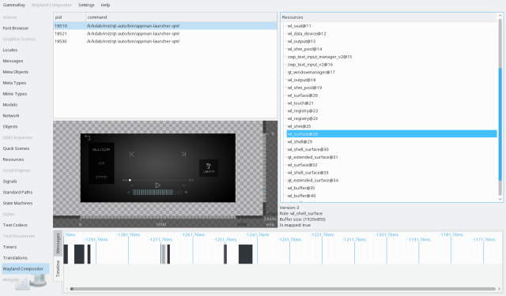

The Wayland compositor inspector allows you to browser QWaylandClient instances and their associated resources, as well as observe Wayland events. For this tool to be available you need at least Wayland 1.12 on the target.

Wayland clients are listed in the view on the top left, showing their process id and executable. These correspond to QWaylandClient instances, the context menu allows navigation to other views for these objects.
Selecting a client object will show its associated Wayland resources in the resource tree on the right side. Selecting a resource will show further information for it, in particular there is a live preview of Wayland surface resources on the center left.
At the bottom there is a log view and a timeline view of Wayland events for the selected client. Hovering over the timeline shows further infromation for the event under the mouse cursor in a tooltip.